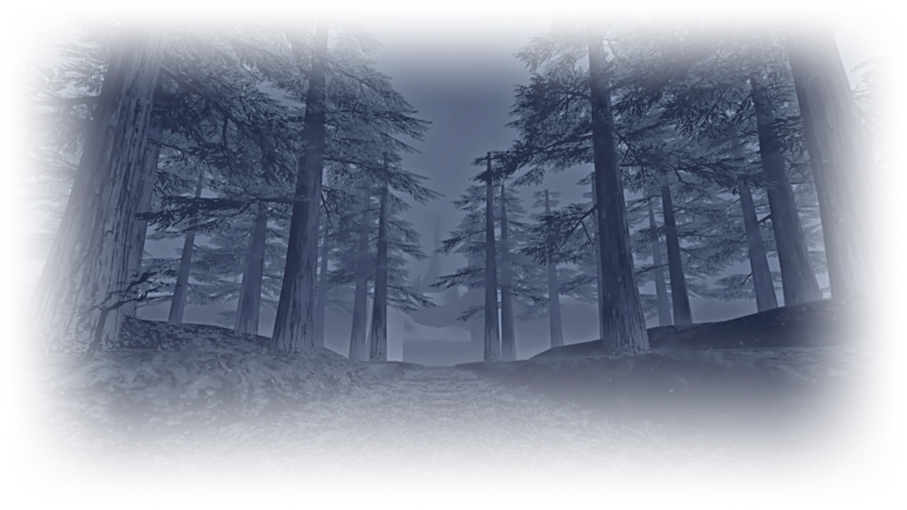

A Living World
A Living World
Vana'diel doesn't wait for you.
Lamps flicker on at dusk. Card players gather at the tavern. The moon decides who's brave tonight. And while you sleep, the beastmen plan their next move.
Right now in Vana’diel
Bastok, lived in
A city with a heartbeat
At dusk, old Toma lights the street lamps one by one.
The stall by the home point changes hands at six, morning and night. Guards change shifts at the South Gate. Kids play tag round the plaza until supper, and the fishermen cheer when they land one off the docks.
- The tavern after dark: a lute, a card game, gossip
- Headlines and market days in the Town window
- Caravans your companions can escort
Cardian
Deal me in
Every monster family has a card. Some only show up in a storm.
Vana'diel's own card game, played across three real regions where the day, the weather and the moon shift the numbers. Collect cards from the monsters you hunt, shining foils from Champions, and rare ones from notorious monsters.
- Pull up a chair at the Steaming Sheep
- Chase Shaali Nine-Lives, the travelling card shark
- Find the Card Club, hiding in plain sight
- Challenge another player, and play for keeps
The war never sleeps
Lose a region, and they come for you
Under a full moon, the beastmen are bold. On moonless nights, the Fomor walk.
Conquest built for a close-knit server: regions you win stay won until someone takes them back. Let the beastmen take one, and warbands gather in its fields, led by an Elite Champion captain.
The Mog House
Home is where the hearth is
Every piece of furniture you place makes you stronger out there.
Fire warms your crafting. Ice brings your companions home sooner. Dark draws Champions to you. Mix the elements, complete a set, and your Mog House powers you wherever you go.
- Moogle chores, paid in Mog Tokens
- Gardening with levels and crossbreeds
- A welcome-back summary of everything you missed
!hearth · !chores · !garden